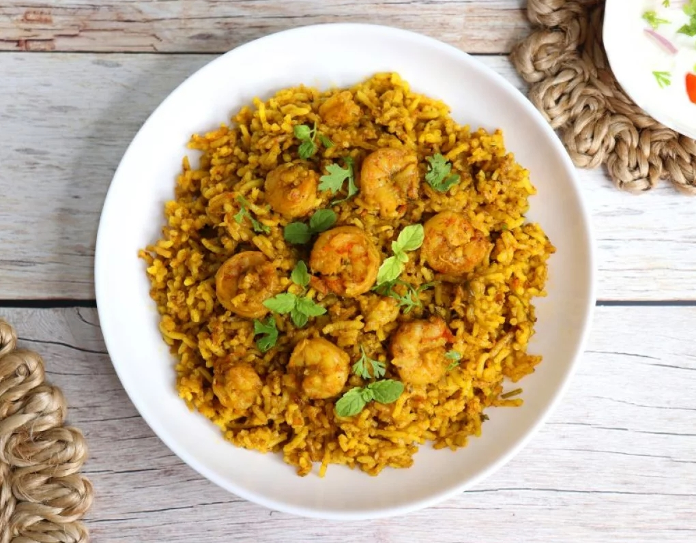

приготовление:
-
Разморозить 500 г креветок, если они заморожены. Мелко порезать 1 репчатую луковицу.
-
На сковороде растопить большой кусок говяжьего жира, выложить лук и обжаривать до мягкости. Посолить с лёгким перебором, добавить чёрный перец, куркуму и молотый чили, слегка обжарить.
-
Добавить 200 г томатной пасты и обжарить вместе с луком. По желанию можно добавить банку консервированной кукурузы. Затем выложить креветки и готовить, периодически помешивая.
-
Пока готовится зажарка, промыть 3,5 стакана риса басмати. Залить его холодной водой, довести до кипения, сразу снять с огня и слить воду.
-
Взять большую кастрюлю с непригораемым дном. Налить щедро оливковое масло, поставить на огонь и добавить молотый шафран.
-
Когда масло разогреется, выложить на дно примерно четверть риса, затем четверть зажарки, снова рис и снова зажарку. Повторять слоями, пока не закончатся ингредиенты.
-
Залить 200 мл воды, сделать в центре плова отверстие до самого дна, накрыть крышкой и готовить на среднем огне 20–30 минут. Проверить, чтобы снизу образовалась румяная корочка, а сверху рис был полностью готов.
-
Для подачи аккуратно перевернуть кастрюлю на большое блюдо, чтобы поджаренная корочка оказалась сверху. Подавать с греческим йогуртом и салатом из помидоров и огурцов.